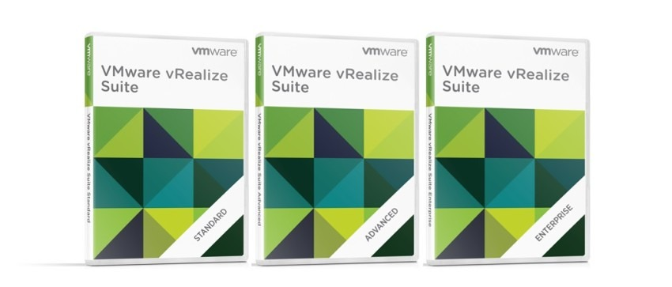
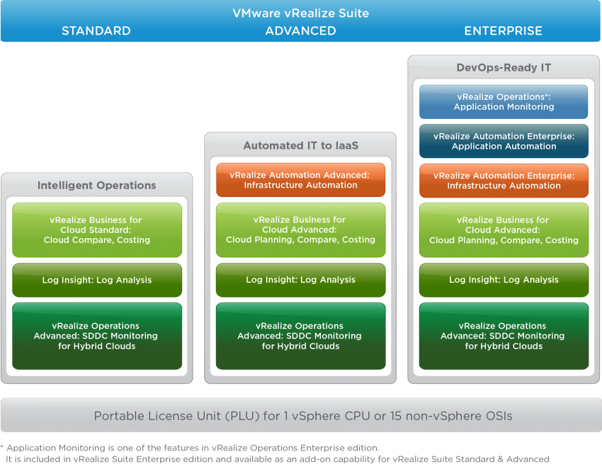
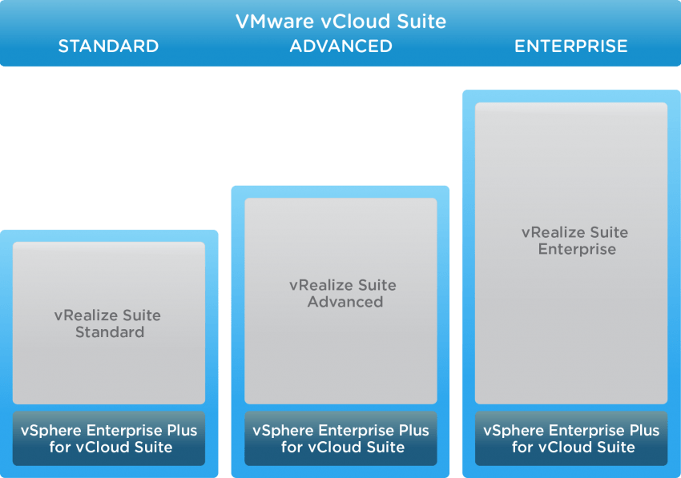
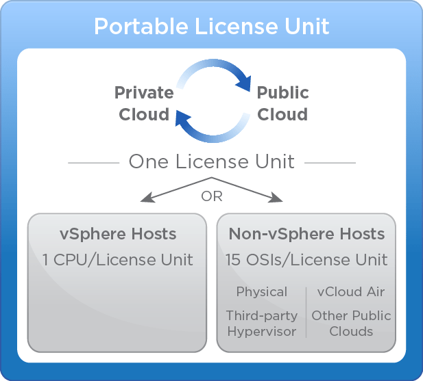

Novas versões da plataforma de Cloud VMware: vCloud Suite 7 e vRealize Suite 7
VMwareCompartilhe esse post nas redes sociais...
Olá Homelabers!
Nesse post (um pouco longo mais vale a pena ler!) vou comentar sobre as novidades que a VMware anunciou no último dia 10/03/2016.
Se segurem ai porque tem bastante coisa nova e interessante, principalmente para o mundo corporativo.
Apresentando as novas versões da plataforma de Cloud da VMware: VMware vCloud 7 e vRealize Suite 7
No último dia 10/02/2016 a VMware apresentou a nova versão dos pacotes VMware vCloud Suite 7 e vRealize Suite 7.
Toda a plataforma de Gerenciamento de Cloud da VMware (Cloud Management Platform - CPM) foi atualizada nos últimos meses e agora com o lançamento das versões 7 do vCloud Suite e do vRealize Suite essas novidades foram incorporadas aos pacotes.
Novo pacote vRealize Suite 7:
Para quem não conhece o vRealize Suite é o pacote para gerenciamento de Núvem Hibrida da VMware e é composto pelos seguintes softwares:
A VMware passa agora a oferecer 3 edições do vRealize Suite:

Standard - essa é uma versão que não existia na linha vRealize Suite. É o primeiro passo para empresas que desejam melhorar a eficiência operacional, performance e disponibilidade, via analises preditivas de toda infraestrutura, logs. É o que a VMware chama de Intelligent Operations
Advanced - voltada para automatização. Fornece suporte para empresas que desejam acelerar a entrega de serviços de infraestrutura. Facilitando assim o “delivery” e o “on going”, oferece ainda autosserviços para usuários (como desenvolvedores que podem solicitar e criar uma VM de forma totalmente automática e com uma visão de custo). É o que a VMware chama de Automated IT to IaaS (IT as a Service ou TI como Serviço)
Enterprise - essa versão é voltada para empresas que já utilizam ou estão implantando “DevOps” e que procuram automatizar toda a entrega e gestão de serviços de TI. É o que a VMware chama de DevOps-Ready IT (TI preparada para DevOps)

Novo pacote vCloud Suite 7
Antes de mais nada, o vCloud Suite é a suite top de linha da VMware para gerenciamento de SDDC (Software Defined Data Center) e Hybrid Cloud (Nuvem Hibrida).
A mais significativa mudança no pacote vCloud Suite 7 foi o alinhamento com o vRealize Suite. Foi uma resposta da VMware ao feedback dos usuários e empresas.
Todos os componentes de gerenciamento de cada edição do vCloud Suite agora são exatamente iguais ao correspondente da edição do vRealize Suite.
Resumindo: o vCloud Suite é um pacote que inclui o vRealize Suite e o vSphere Enterprise Plus para vCloud.

Lembrando que essa mudança já vale para o 1º quarto de 2016.
Novo modelo de licenciamento: Unidade de Licençiamento Portável ou Portable Licensing Unit (PLU).
Foi criado um novo modelo de licenciamento para o vRealize Suite chamado Portable Licensing Unit (PLU) que da flexibilidade para utilizar o vRealize para gerenciar tanto uma núvem baseada em ferramentas VMware “on premises) ou um hypervisor de terceiros (como por exemplo Hyper-V, Xen Server, etc) ou ainda outros “vendors” de núvem pública como Amazon AWS e Microsoft Azure. Ou seja, você que já está acostumado a utilizar os produtos VMware na sua “núvem local” vai poder gerenciar também a sua núvem privada seja ela de quem for. Genial!
A figura abaixo demonstra como funciona na prática a PLU:

Um PLU permite que o vRealize Suite gerencie um número ilimitado de VMs rodando em uma vSphere CPU e até 15 OSI (Operating System Intances - Instâncias de Sistemas Operacionais) rodando em outros sistemas Não-vSphere (Amazon AWS, vCloud vAir, Azure, etc) ou seja: 1 PLU - 1 vSphere CPU e até 15 VMs em outra Cloud ou virtualizador.
Novidades da versão 7 do vRealize Suite e vCloud Suite:
* [vRealize Automation 7.0](https://blogs.vmware.com/management/2015/11/whats-new-vrealize-automation-7.html?src=management-blog&cid=70134000001M5td)
* Accelerated Time to Value
* Converged Blueprints
* NSX Integration and Automation
* [vRealize Business for Cloud 7.0.1](http://blogs.vmware.com/management/2016/02/changes-vrealize-business-pricing-packaging?src=management-blog&cid=70134000001M5td) <New Name>
* Hybrid Cloud Costing
* Advanced Showback to Lines of Business
* Enhanced Reporting
* Tighter Integration with vRealize Automation 7.0
* [vRealize Operations 6.2](http://blogs.vmware.com/management/2016/02/whats-new-in-vrealize-operations-6-2.html?src=management-blog&cid=70134000001M5td)
* Intelligent Workload Placement
* Optimal Resource Utilization
* Proactive Visibility
* [vRealize Log Insight 3.3](http://blogs.vmware.com/management?p=9049?src=management-blog&cid=70134000001M5td)
* Simplified 3rd Party App Integration
* Server side automatic agent upgrades
* New vRealize Log Insight for vCenter Standard
Para saber mais, visite a página dos produtos vRealize Suite e vCloud Suite
Fonte: http://blogs.vmware.com/management/2016/02/introducing-vmware-vcloud-suite-7-vrealize-suite-7.html
É isso ai Homelabers! Como vocês puderam ver, a VMware também está se lançando com tudo na Cloud e ainda tem muita aguá para rolar. Esse é o futuro que já chegou!
Até a próxima.
Compartilhe esse post nas redes sociais...Valdecir Carvalho
Nerd e pai orgulhoso da Mariana e João. Profissional Sênior de TI com foco em arquitetura de infraestrutura e cloud computing. Blogueiro, podcaster, palestrante, amante de comunidades técnicas, fotógrafo aposentado e adora jogos antigos.
#vExpert · #VMUGLeader · #VUGBrasil · #vBronwBagBrasil · #VeeamVanguard